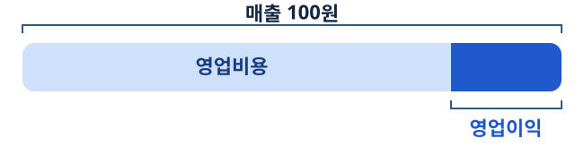

8차수 · 가온생활 실적 회의
회의에 올라온 숫자, 그대로 비교해도 될까?
가온생활 실적 회의에 자료가 도착했습니다. 같은 기업의 숫자가 여러 줄에 있다면, 어떤 값을 쓰겠습니까?

가상 기업 · 수업용 이미지
도입
“매출이 늘었습니다. 실적이 좋아졌다고 보고할까요?”
영업팀장 “매출이 늘었습니다. 실적이 좋아졌다고 보고하겠습니다.”
실적을 판단하려면 매출과 함께 어떤 숫자를 확인해야 할까요?
가온생활 사례 · 교육용 합성 자료
학습목표
오늘 회의에 가져갈 세 가지
정제표
기간·범위·단위·버전을 확인해 비교 가능한 행을 고릅니다.
지표 비교표
매출과 영업이익의 증감률, 영업이익률 차이를 계산합니다.
세 문장 브리핑
관찰 사실, 해석, 추가 질문을 전달합니다.
가온생활 사례 · 교육용 합성 자료
원자료
같은 회사 숫자가 여러 줄에 있다
| ID | 기간·범위 | 버전 | 단위 | 매출 | 영업이익 |
|---|---|---|---|---|---|
| A1 | 전기 연간 연결 | 확정 | 억 원 | 100 | 10 |
| A2 | 전기 4분기 연결 | 확정 | 억 원 | 29 | 2.8 |
| A3 | 당기 연간 연결 | 최초 발표 | 백만 원 | 11,900 | 950 |
| A4 | 당기 연간 연결 | 정정 확정 | 백만 원 | 12,000 | 960 |
| A5 | 당기 4분기 연결 | 확정 | 억 원 | 34 | 2.1 |
| A6 | 당기 연간 별도 | 발췌 | 억 원 | 101 | 미공개 |
당기 연간 연결 실적을 대표할 행을 고르고 이유를 적으세요.
가온생활 사례 · 교육용 합성 자료
개념
한 행은 무엇을 뜻할까?
관측 단위(observation unit)는 한 행이 나타내는 대상입니다. 연간 연결 기준의 정제표에서 한 행은 기업 × 회계연도입니다.
기간
한 해와 4분기는 포함 기간이 다릅니다.
집계 범위
연결과 별도는 포함 대상이 다릅니다.
단위와 버전
원래 단위, 발표·정정 여부와 원자료 ID를 기록합니다.
가온생활 사례 · 교육용 합성 자료
실습 A
비교표를 직접 정리하다
| 회계연도 | 매출(억 원) | 영업이익(억 원) | 원자료 ID |
|---|---|---|---|
| 전기 | 100 | 10 | A1 |
| 당기 | 직접 환산 | 직접 환산 | 선택 |
당기 행을 완성하고 제외한 자료마다 이유를 적으세요. 1억 원은 100백만 원입니다.
가온생활 사례 · 교육용 합성 자료
해설
정제표의 숫자를 원자료에서 찾을 수 있다
A1과 A4를 사용합니다. 분기, 별도, 이전 발표 값은 원자료에 처리 사유와 함께 남깁니다.
가온생활 사례 · 교육용 합성 자료
개념
매출 100원 중 얼마를 남겼나?
영업이익률(operating margin) = 영업이익 ÷ 매출액 × 100

분자와 분모는 같은 기간과 범위로 맞춥니다. 매출액이 0이면 계산할 수 없습니다.
가온생활 사례 · 교육용 합성 자료
실습 B
세 지표의 변화를 계산하다
| 지표 | 전기 | 당기 | 계산 항목 |
|---|---|---|---|
| 매출액 | 100 | 120 | 증감률(%) |
| 영업이익 | 10 | 9.6 | 증감률(%) |
| 영업이익률 | 계산 | 계산 | 당기−전기(%p) |
증감률 = (당기 값 − 전기 값) ÷ 전기 값 × 100
계산기나 스프레드시트로 계산하고 각 식에 쓴 원래 수치를 적으세요.
가온생활 사례 · 교육용 합성 자료
해설
매출은 20% 늘고 영업이익률은 2%p 하락했다
이익률은 10%에서 8%로 2%p 하락했습니다. 전기 이익률 대비 상대 감소율은 20%입니다.
가온생활 사례 · 교육용 합성 자료
비교 활동
어느 경쟁사 자료를 회의에 가져갈까?
자료 1
나래생활 · 당기 연간 · 연결
자료 2
나래생활 · 당기 4분기 · 연결
자료 3
나래생활 · 당기 연간 · 별도
가온생활의 당기 연간 연결 이익률과 비교할 수 있는 자료를 고르세요.
가온생활 사례 · 교육용 합성 자료
해설
전년 비교는 변화, 경쟁사 비교는 격차를 보여 준다
나래생활의 당기 연간 연결 매출은 110억 원, 영업이익은 9.9억 원입니다.
가온생활 사례 · 교육용 합성 자료
실습 C
경영진에게 세 문장으로 보고하다
관찰 사실
어떤 숫자가 어느 기간에 얼마나 달라졌나요?
해석
그 수치가 실적을 판단하는 데 어떤 의미가 있나요?
후속 질문
어떤 자료를 더 요청할까요?
짝이 인용한 수치 하나를 다시 계산하고, 사용한 원자료 ID를 찾아보세요.
가온생활 사례 · 교육용 합성 자료
해설
매출 100원당 영업이익은 10원에서 8원으로 줄었다
- 관찰 사실 당기 연결 매출은 전기보다 20% 늘었고, 영업이익률은 2%p 하락했습니다.
- 해석 매출 100원당 남긴 영업이익이 10원에서 8원으로 줄었습니다.
- 후속 질문 매출원가율과 판매관리비율 중 어느 쪽이 더 크게 변했습니까?
가온생활 사례 · 교육용 합성 자료
개인 적용
우리 조 기업의 자료로 검산하기
- 비교 가능한 기간과 범위를 정합니다.
- 원문에서 값 하나를 찾아 출처와 단위 변환을 기록합니다.
- 같은 기준의 자료가 부족하다면 어떤 자료가 필요한지 적습니다.
가온생활 사례 · 교육용 합성 자료
다음 차수
“원가가 오른 건가요, 팔린 제품이 달라진 건가요?”
정제표, 지표 비교표, 세 문장 브리핑을 다음 회의에 가져갑니다.
9차수 · 원인 검토 회의 →가온생활 사례 · 교육용 합성 자료